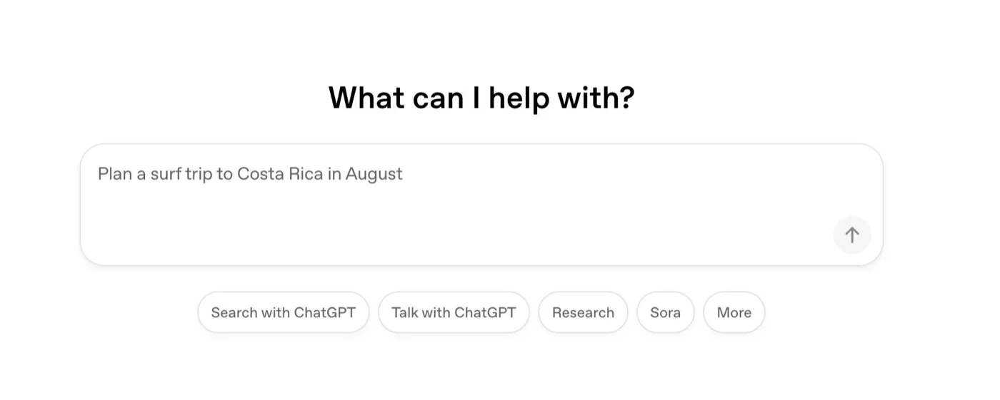

Support 6 sur 7
Le paradoxe de Jevons
L'efficacité réduit le coût d'un usage. L'effet sur le total dépend aussi de l'évolution de la demande.
Le paradoxe
Ce que Jevons a vu dans le charbon
- Au XIXe siècle, les machines à vapeur brûlent de moins en moins de charbon pour le même travail.
- Jevons a observé que la consommation totale de charbon augmentait malgré ces gains.
William Stanley Jevons, The Coal Question, 1865.
Le paradoxe
Un mécanisme possible
C'est le mécanisme proposé par l'effet rebond ; son ampleur doit être mesurée.
Les usages
Le calcul revient moins cher
Certains modèles récents atteignent un niveau comparable avec moins de calcul par jeton.
Le tarif au jeton baisse également, ce qui rend de nouveaux usages accessibles.

Les usages
De nouveaux usages
Résumés, correction, traduction, autocomplétion, agents qui tournent seuls pendant des heures.
Le coût d'une requête baisse. Le nombre de requêtes, lui, se compte en milliards.

Les agents
Un agent, ce n'est pas un message
Vous tapez une consigne. L'agent, lui, découpe le travail.
Chacun de ces allers-retours est facturé en jetons, et donc en électricité.
Les agents
Un cas d'usage estimé
Un message de chat
0,24 Wh
médiane mesurée par Google en 2025.
Une consigne à un agent
≈ 150 Wh
estimés en 2026 à partir des jetons comptés, sur un autre périmètre : un ordre de grandeur, pas un rapport exact.
Google, « Measuring the environmental impact of delivering AI at Google Scale », août 2025. Climatologue Zeke Hausfather, 2026 : huit semaines d'usage réel, 1 138 consignes, jetons comptés puis convertis en énergie, environ 170 kWh. Incertitude annoncée d'un facteur 2, soit 60 à 290 Wh.
Les agents
L'agent se relit sans arrêt
Ces relectures passent par le cache : le contexte déjà calculé est facturé beaucoup moins cher et demande moins de calcul. Un jeton relu ne coûte donc pas un jeton neuf.
Dans cette mesure, le volume total traité explique l'essentiel de la consommation, pas la seule réponse visible.
Répartition mesurée par Hausfather, 2026, sur 3,2 milliards de jetons ; barre à l'échelle. Tarif du cache chez Anthropic : 0,1 fois le prix d'entrée, 0,05 pour ses derniers modèles. Le gain en énergie, lui, n'est pas publié.
Les agents
Sur compar:IA, un repère
Le scénario « session de code agentique » compte 450 k jetons en entrée et 50 k en sortie.
L'estimation d'énergie ne retient que la sortie. Les 450 k jetons d'entrée, qui forment ici l'essentiel du volume, n'entrent pas dans le calcul.
L'entrée omise tire l'estimation vers le bas ; l'hypothèse d'une exécution sans cache peut la tirer vers le haut. Le chiffre donne un ordre de grandeur, pas une borne démontrée.
Formule du produit : énergie = Wh par million de jetons × jetons de sortie. Hypothèse affichée : exécution sans cache.
Les échelles
Et à grande échelle
Scénario hypothétique : 1 % de la population mondiale fait écrire cinq pages par une IA chaque jour, pendant un an, à 15,5 Wh le texte. Cela représente la production annuelle de :
124 éoliennes
Calcul : 82 millions de personnes × 15,5 Wh × 365 jours = 464 GWh par an. 15,5 Wh : GPT 5.6 Luna pour cinq pages, selon la formule de compar:IA. Hypothèse : une éolienne de 2 MW au facteur de charge de l'éolien terrestre français en 2025, 21,4 %, soit 3,75 GWh par an. Population mondiale : ONU, World Population Prospects 2024. Facteur de charge : RTE, bilan électrique 2025.
Les échelles
Les deux faits, même acteur
Google publie les deux, à quelques mois d'écart.
Par requête, ça baisse
÷ 33
d'énergie par requête texte sur Gemini, en douze mois. Médiane : 0,24 Wh.
Au total, ça monte
+ 38 %
d'électricité pour ses centres de données en 2025 : 42 TWh, contre 31 en 2024.
Google, « Measuring the environmental impact of delivering AI at Google Scale », août 2025, et Environmental Report 2026.
Les échelles
À l'échelle d'un pays
Une requête se compte en milliwattheures, un pays en térawattheures.
Lawrence Berkeley National Laboratory, United States Data Center Energy Usage Report, décembre 2024. Barres à l'échelle. Ces projections couvrent tous les centres de données, pas la seule IA.
Les échelles
À l'échelle du monde
La consommation des centres doublerait en cinq ans, celle des centres dédiés à l'IA triplerait.
Agence internationale de l'énergie, « Key Questions on Energy and AI », avril 2026. Barres à l'échelle. Tous les centres de données, pas la seule IA.
Les échelles
Et l'IA seule, dans tout ça
0,1 à 0,2 %
de l'électricité mondiale, pour les centres de données dédiés à l'IA en 2023.
Le chiffre est petit, et il croît vite : les auteurs l'estiment cinq à dix fois plus élevé en 2030. Les deux moitiés de la phrase comptent autant.
Kamiya et Coroamă, Data Centre Energy Use: Critical Review of Models and Results, IEA 4E, mars 2025 : 30 à 50 TWh en 2023 pour les centres dédiés à l'IA, 200 à 400 TWh en 2030. Rapportés à une production mondiale d'électricité d'environ 30 000 TWh en 2023.
Les échelles
Cinq fois mille
- 1 mWhUn jeton produit.
- × 1 000
- 1 WhUne réponse de quelques lignes.
- × 1 000
- 1 kWhUn millier de réponses.
- × 1 000
- 1 MWhUn logement français pendant trois mois.
- × 1 000
- 1 GWhEnviron 220 logements pendant un an.
- × 1 000
- 1 TWhEnviron dix-neuf heures d'électricité pour la France entière.
Ordres de grandeur : un logement français, 4,5 MWh d'électricité par an ; la France, environ 450 TWh par an.
Les échelles
Deux échelles d'action
À l'échelle d'un usage
Vingt messages par jour à 0,24 Wh : moins de 2 kWh par an, un radiateur de 1 kW allumé deux heures. Avec un agent, au rythme du cas étudié, plus de 1 000 kWh.
À l'échelle du parc
Les centres de données se comptent en térawattheures, et se construisent pour dix ans.
Le choix du modèle agit sur la consommation d'un usage. Les décisions d'investissement et de capacité agissent, elles, sur l'échelle du parc.
Calcul : 20 × 0,24 Wh × 365 jours = 1,75 kWh. 0,24 Wh : médiane Google, 2025. Agent : environ 150 Wh par consigne, cas estimé par Zeke Hausfather, 2026 : 1 138 consignes en huit semaines, soit environ 1 100 kWh sur un an. Le parc se lit dans les rapports annuels des fournisseurs.
Le débat
Un rebond possible
Les gains par requête et la hausse du total sont mesurés ; la part du lien de cause à effet entre les deux ne l'est pas.
La croissance vient aussi de l'argent investi et de fonctionnalités plus gourmandes : vidéo, raisonnement, agents.
Luccioni, Strubell et Crawford, « From Efficiency Gains to Rebound Effects », FAccT 2025, qui juge l'effet « hautement plausible » sans le démontrer.
Le débat
Deux affirmations à vérifier
« L'efficacité va tout régler »
Cette hypothèse suppose que les gains d'efficacité compensent la croissance des usages.
« L'IA va tout engloutir »
Cette hypothèse suppose une croissance très forte des usages et de leur coût unitaire.
Pour les évaluer, il faut expliciter les hypothèses de volume, d'efficacité et de coût.
À retenir
Ce que ça change pour le débat
L'efficacité ne décide rien toute seule sur le total consommé.
- Un modèle plus sobre réduit ma consommation. Réduit-il celle du parc ?
- Si l'IA ne coûte presque rien, qu'est-ce qui limite son usage ?
- Agir sur la technique, le prix, la règle, ou nos habitudes ?